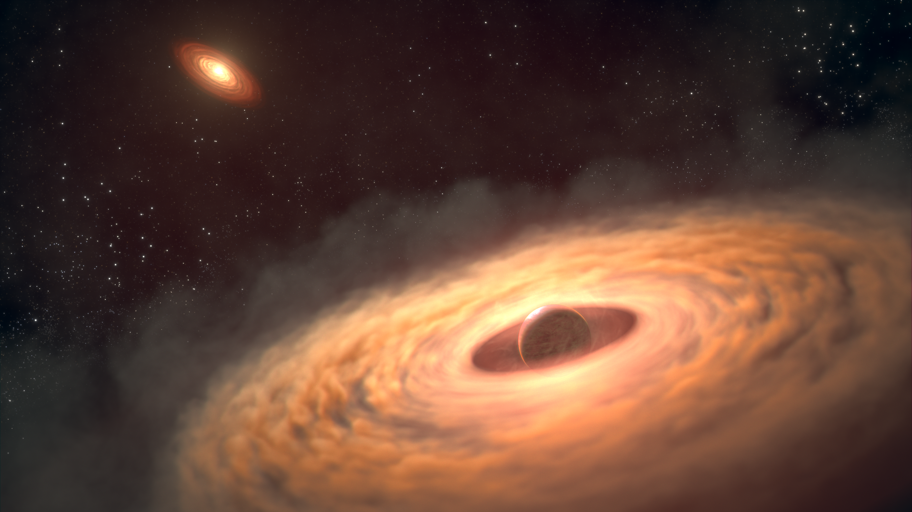

Circumplanetary disks (CPDs) are compact disks of gas and dust around young giant planets. They control how quickly a planet grows and provide the environment in which moon systems, like Jupiter's Galilean moons, can form. Until recently, these disks were almost entirely theoretical.
I use high-contrast imaging techniques to separate the faint light of a CPD from the much brighter host star and circumstellar disk. With JWST/MIRI I can obtain the first mid-infrared spectra of these disks and measure their thermal emission, molecular make-up, and dust. I co-lead multiple JWST programs on CPDs, using these spectra to explore how their material may shape both a planet's atmosphere and its future moons.
Alongside this work, I am helping to bring together the growing CPD community. I co-lead the ISSI International Team Circumplanetary Disks in the JWST Era and organize meetings and workshops that connect observers and theorists. Looking ahead, the Extremely Large Telescope will let us study CPDs in unprecedented detail, probing their structure on Solar-System scales.